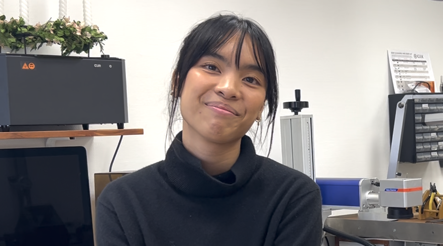
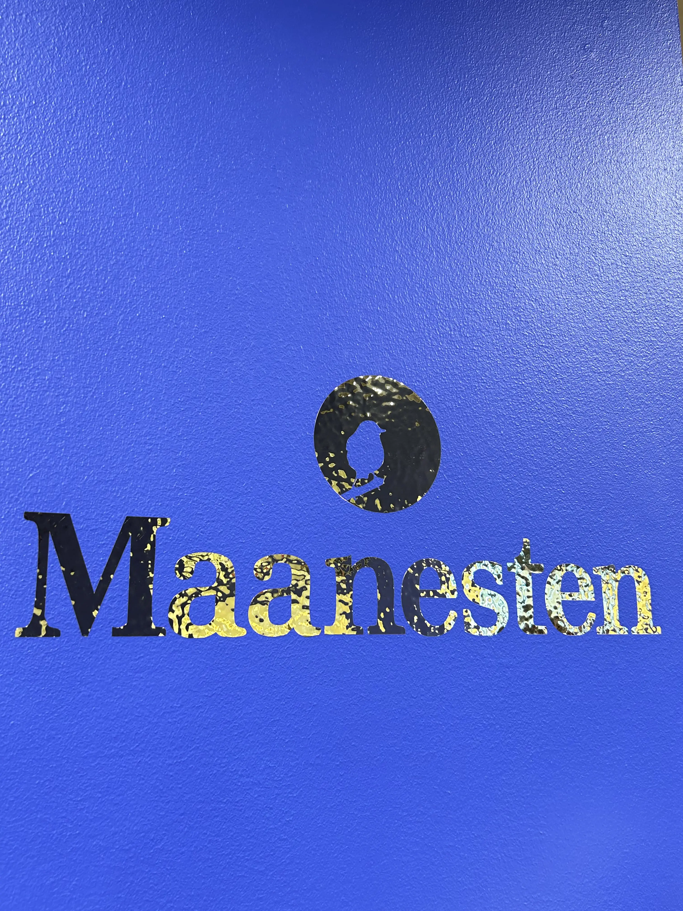
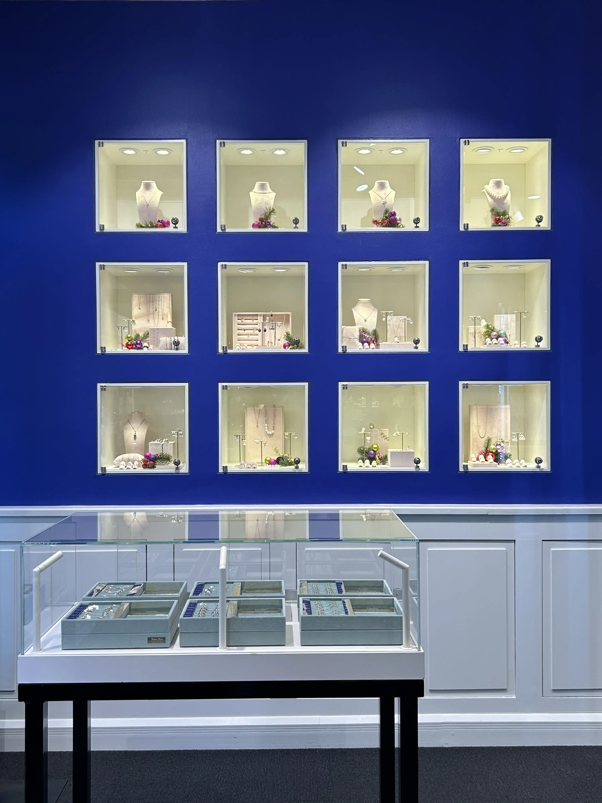
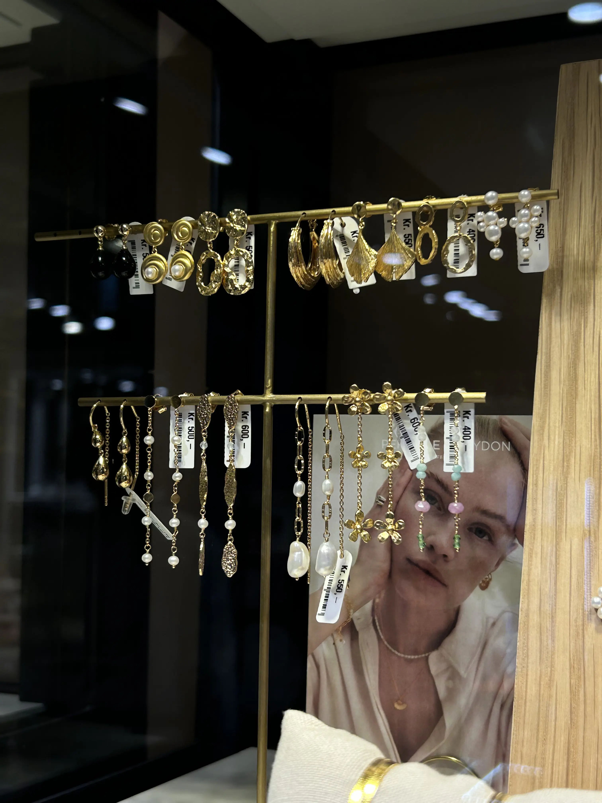

Håndværk med Hjertet: Passion for Guldsmedekunst
Barbara Maria's nye guldsmed
Anna Adamsen er den nyeste guldsmedelærer hos Barbara Maria, hvor hun netop er begyndt at dele sin passion for håndværket. Selvom hun er ny i rollen, bringer hun en frisk energi og nysgerrighed til undervisningen, og hun er dedikeret til at lære både teknikker og designprincipper. Med sin store entusiasme for ædelmetal og smykkefremstilling skaber Anna et inspirerende og kreativt miljø

Anna Adamsen
GALLERI


